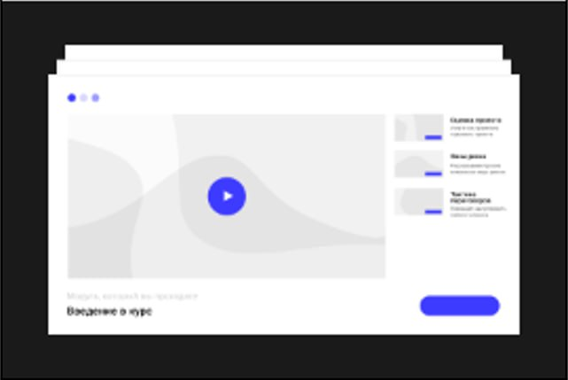
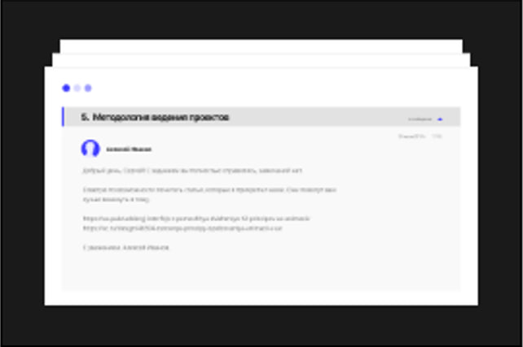
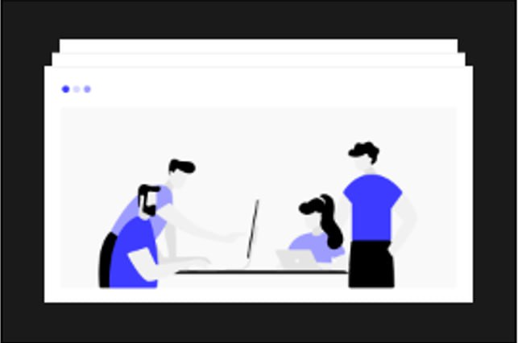
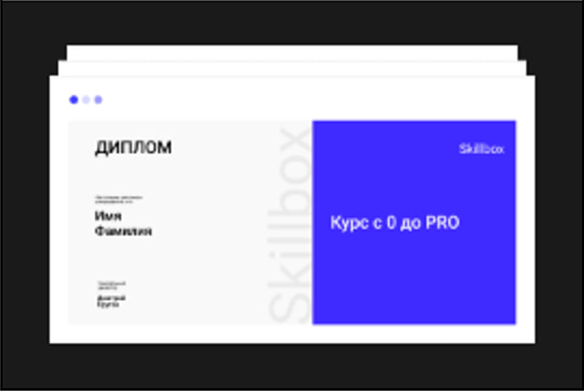

Як проходить навчання
Дивіться відеолекції
Яскраві відео з зрозумілими поясненнями теорії.
Робите завдання і відправляєте на перевірку
Поспішати не треба, вибирайте зручний режим навчання.
Чи отримуєте розбір вашої роботи
Ваш куратор розповість про помилки і про те, як їх виправити.
Чи працюєте над помилками
Проходьте перевірку ще раз, щоб переконатися що в цей раз все правильно.
Рівні навчання
Перший рівень: чітка і зрозуміла теорія. За 4 місяці вам потрібно буде пройти 16 тем. Ви самостійно вивчите базові навички, з якими зможете створювати справжні проєкти. Ви створите дипломний проєкт — движок блогу в веб-інтерфейсі. Захист проєкту проходить у відкритому режимі — на нашому майданчику або по відеозв'язку.
Рівні навчання
Другий рівень: інтенсивна практика. Під керівництвом наставника ви в складі команди створите власну соціальну мережу. Фактично ця частина програми прирівнюється до стажування. Вам видадуть Т3 і дизайн проєкту. Всі процеси, через які ви пройдете,- це максимально наближений до бойових умов досвід. Саме так створюється комерційне пограмне забезпечення в фірмах-роботодавців